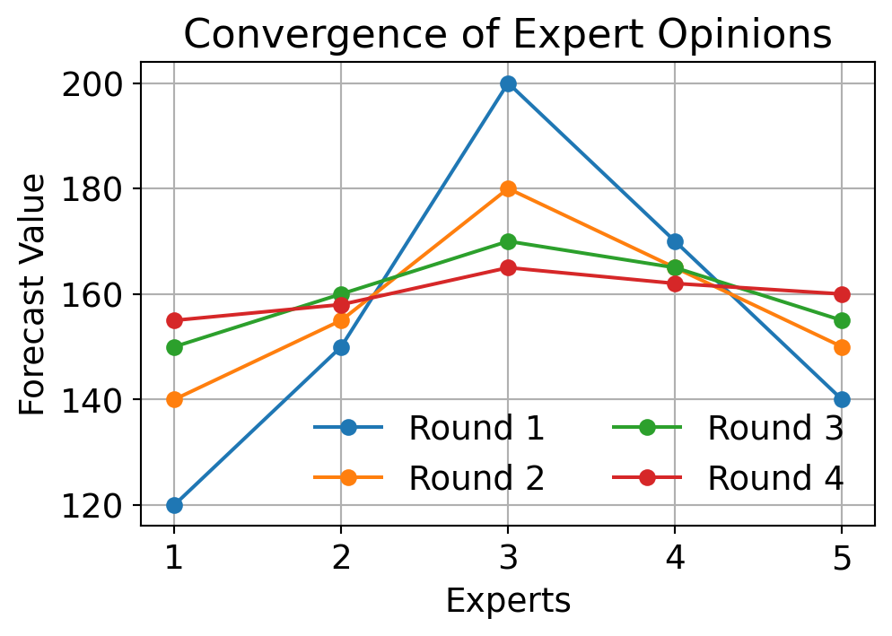
Topic 5: Forecasting Techniques
05115130 Supply Chain Modelling and Optimisation
9 Jun 2026
Goals Today
- Introduction
- Forecasting challenges in supply chain
- Forecast horizon
- Types of forecasting (quantitative & qualitative)
- Quantitative methods
- Delphi method
- Qualitative methods
- Pattern analysis
- Naïve forecasting
- Regression analysis (simple linear (SLR) and multiple linear (MLR))
- Moving average (MA)
- Weighted moving average (WMA)
- Simple exponential smoothing (SES)
- Evaluation metrics
- Comparative insights
1. Introduction
Forecasting is the process of making predictions based on past and present data.
Purpose in Supply Chain:
- Align supply with anticipated demand
- Reduce inventory holding costs
- Minimise stockouts and overstock
- Support production planning, procurement, and logistics
Forecasting
Planning
Procurement
Production
Delivery
1.1 Forecasting Challenges in Supply Chain
Demand variability
The fluctuations or changes in customer demand for a product or service over a specific period, which could cause disruptions in the supply chain.
Lead time fluctuation
The inconsistency or unpredictability in the duration it takes for tasks or materials to traverse the supply chain.
Data quality issues
An intolerable defect in a dataset that reduces its reliability and trustworthiness. The most common issues are incomplete and inconsistent data.
Bullwhip effect
A SC phenomenon where a change in demand at the retail level leads to increasingly larger fluctuations in demand at the wholesaler and manufacturer levels.
Seasonality and trend shifts
The periodic fluctuations that occur at specific regular intervals, such as weekly, monthly, or quarterly, often influenced by seasonal factors.
1.2 Forecast Horizon
Forecasts are often grouped by time horizon.
Short-Term
- Days to weeks
- Used for replenishment and staffing
Medium-Term
- Months to one year
- Used for production and sales planning
Long-Term
- More than one year
- Used for capacity and facility decisions
1.3 Types of Forecasting
Qualitative Methods
- Based on expert judgment, opinions, and market research
- E.g. Delphi method, customer surveys, panel consensus, sales force estimate
Quantitative Methods
- Based on historical data and mathematical models
- E.g. Naïve forecasting, regression, moving average, exponential smoothing
2 Quantitative Methods - Delphi Method
Delphi Method
A qualitative forecasting technique that uses a panel of experts who anonymously provide forecasts and opinions through multiple rounds of questionnaires.
Then, the reports are statistically aggregated and shared with the group after each round, allowing experts to revise their forecasts based on the feedback from others.
The process continues until a consensus is reached or a predefined number of rounds is completed.
The method is useful for forecasting in situations where there is a lack of historical data or when the future is highly uncertain, such as in new product development or technological forecasting.
Expert Opinions → Questionnaire → Summary Feedback → Revised Forecasts
↓
Consensus
2.1 Quantitative Methods - Delphi Method
Consensus is reached through multiple rounds of expert feedback.
The results indicate that
In the first round, experts give very different forecasts.
After seeing the summary of responses, they reconsider their estimates.
Over several rounds, opinions move closer together.
- Once consensus is reached or the maximum number of rounds is completed, the final forecast can be used for decision-making in supply chain planning and operations.
3. Quantitative Methods
Quantitative forecasting methods use historical data and mathematical models to predict future values.
The examples include:
Naïve forecasting: Assumes the future will be the same as the most recent observation.
Regression analysis: Models the relationship between a dependent variable and one or more independent variables.
Moving average: Averages a fixed number of the most recent data points to smooth out fluctuations.
Exponential smoothing: Applies decreasing weights to past observations to forecast future values.
Time series decomposition: Breaks down a time series into trend, seasonal, and random components.
These methods are typically more objective and can be more accurate than qualitative methods when there is sufficient historical data available.
3.1 Pattern Analysis
Demand data often follows different patterns that influence the choice of forecasting method. The most common demand components are
Level
A constant (stable) average demand over time.
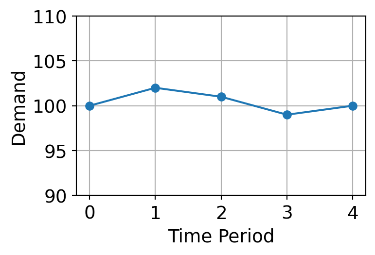
Naïve forecasting, moving average, exponential smoothing
Trend
Demand gradually increases or decreases over time.
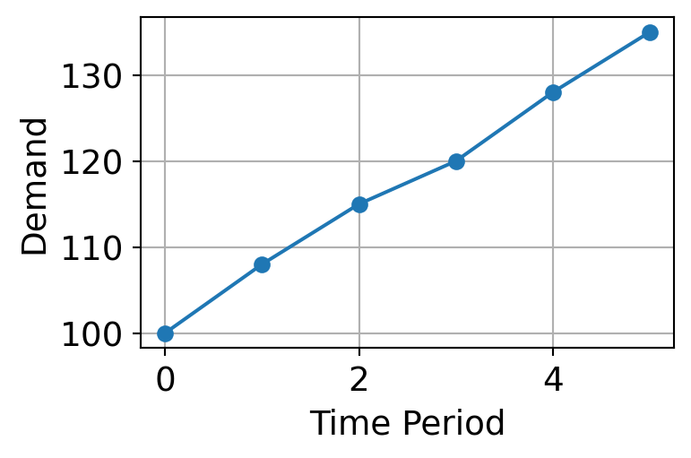
Linear models, regression, Holt’s exponential smoothing
3.1 Pattern Analysis (cont.)
Seasonality
Regular and predictable fluctuations in demand that occur at specific intervals, such as weekly, monthly, or quarterly. Most commonly observed in retail.
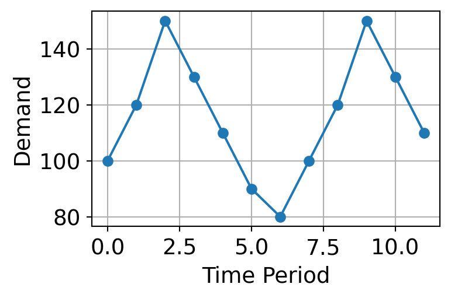
SARIMA, Holt-Winters models, seasonal naïve forecasting
Random variation
No clear pattern and caused by unpredictable factors, such as sudden weather changes, economic shifts, or market disruptions.
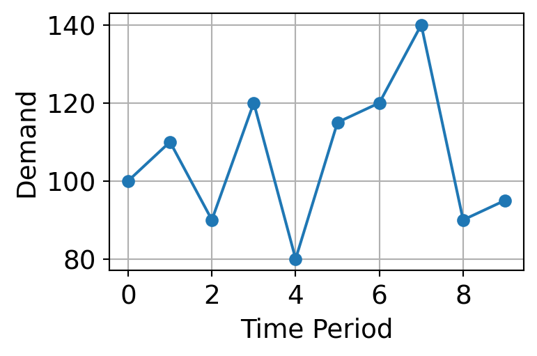
Statistical smoothing methods, safety stock planning, scenario analysis
3.1 Pattern Analysis (cont.)
- In practice, demand data often contains a combination of these patterns, making forecasting more complex.
\[ \text{Demand = Trend + Seasonality + Random Variation} \]
- Pattern analysis is crucial for selecting the appropriate forecasting method and improving forecast accuracy.
- The choice of forecasting method should be based on the dominant pattern in the data and the specific context of the supply chain problem being addressed.
3.2 Naïve Forecasting
Assumes the next period forecast \(F_{t+1}\) will be the same as the current period,
\[ F_{t+1} = F_t \]
| Period | 1 | 2 | 3 | 4 | 5 | 6 | 7 | 8 | 9 | 10 | 11 | 12 |
|---|---|---|---|---|---|---|---|---|---|---|---|---|
| Demand \(F_t\) | 100 | 108 | 115 | 120 | 118 | 125 | 130 | 128 | 135 | 140 | 145 | 150 |
| Forecast \(F_{t+1}\) | - | 100 | 108 | 115 | 120 | 118 | 125 | 130 | 128 | 135 | 140 | 145 |
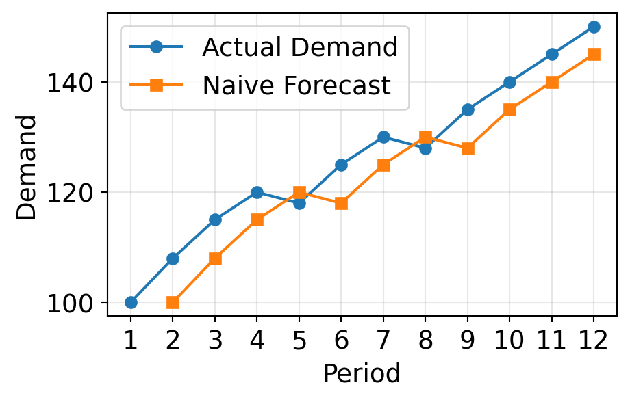
- Very simple to apply
- Useful as a benchmark
- Works better when demand is stable
- Performs poorly when trend or seasonality exists
3.3 Regression Analysis
- A statistical method for modelling the relationship between a dependent variable and one or more independent variables.
- Commonly used to identify trends and make forecasts when data shows a linear pattern.
Equation of the Best-Fit Line
\[ \hat{y} = a + bx \]
where \(\hat{y}\) is the predicted value, \(x\) is the independent variable, \(a\) is the intercept, and \(b\) is the slope of the line:
\[ b = \frac{\Delta y}{\Delta x} = \frac{y_2 - y_1}{x_2 - x_1} \]
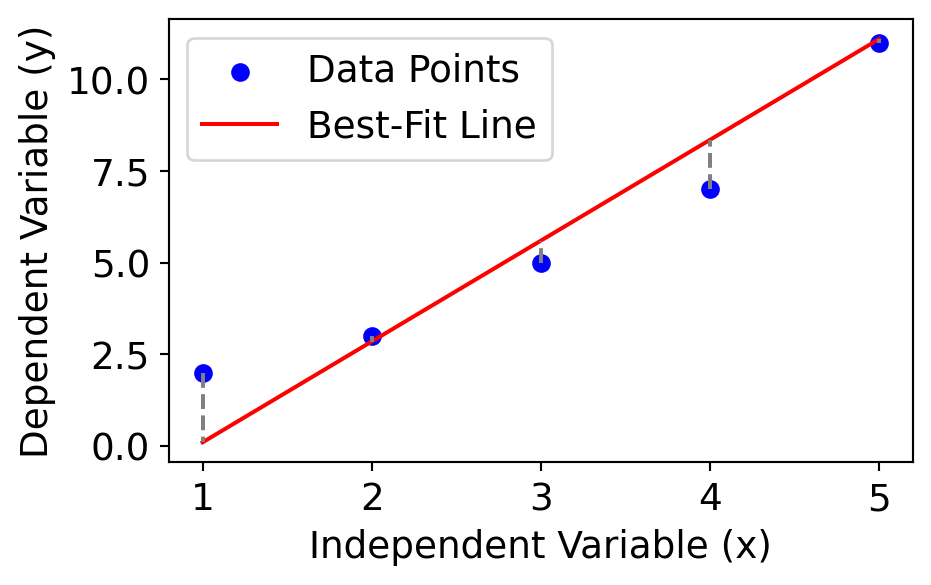
3.3.1 The Least Squares Method
In linear regression, the best-fit line is the straight line that most accurately represents the relationship between the independent variable (input) and the dependent variable (output). It is the line that minimises the residuals, given by: \[\text{Residual} = y_i - \hat{y}_i,\]
where \(y_i\) = the actual observed value and \(\hat{y}_i\) = predicted value
The least squares method minimises the sum of the squared residuals (SSE):
\[SSE = \sum (y_i - \hat{y}_i)^2\]
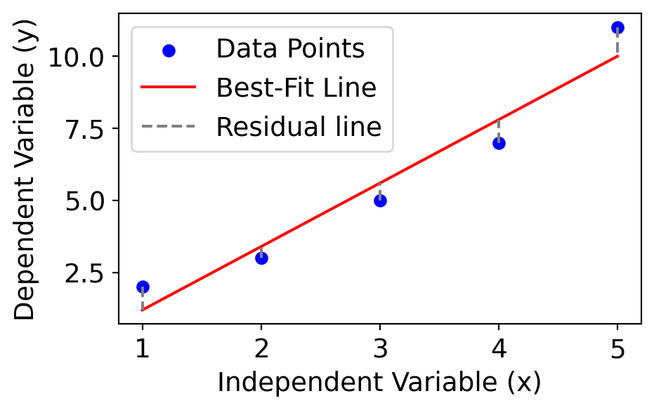
3.3.2 Curve Fitting
Given \(n\) observations \((X_i, Y_i)\), we can fit a line to the overall pattern of these data points. From the Least Squares Method, we can calculate the slope \(b\) and intercept \(a\) using the following formula:
\[b = \frac{\sum XY - n\bar{x}\bar{y}}{\sum X^2 - n\bar{x}^2} = \frac{\sum (X_i - \bar{x})(Y_i - \bar{y})}{\sum (X_i - \bar{x})^2}\]
\[a = \bar{y} - b\bar{x}, \quad \bar{x} = \frac{\sum X}{n}, \quad \bar{y} = \frac{\sum Y}{n}\]
- Slope (b) indicates how much the dependent variable (\(y\)) changes with each unit change in the independent variable (\(x\)). E.g. slope of 5 means that for every 1-unit increase in \(x\), the value of \(y\) increases by 5 units.
- Intercept (a): The intercept represents the predicted value of \(y\) when \(x = 0.\)
It is the point where the line crosses the y-axis.
3.3.3 Example
Predict the demand \(Y\) based on week number \(X\) using SLR.
Step 1: Raw Data
| Week (\(X\)) | Demand (\(Y\)) |
|---|---|
| 1 | 120 |
| 2 | 150 |
| 3 | 170 |
| 4 | 200 |
| 5 | 220 |
Step 2: Compute Intermediate Values
| \(X\) | \(Y\) | \(X^2\) | \(XY\) |
|---|---|---|---|
| 1 | 120 | 1 | 120 |
| 2 | 150 | 4 | 300 |
| 3 | 170 | 9 | 510 |
| 4 | 200 | 16 | 800 |
| 5 | 220 | 25 | 1100 |
| 15 | 860 | 55 | 2830 |
\[ b = \frac{\sum XY - n\bar{x}\bar{y}}{\sum X^2 - n\bar{x}^2} = \frac{2830 - 5(15/5)(860/5)}{55 - 5(15/5)^2} = 25 \]
\[ a = \bar{y} - b\bar{x} = 860/5 - 25 \cdot 15/5 = 97 \qquad\Rightarrow \hat{Y} = 97 + 25X \]
3.3.3 Example (cont.)
Calculate the predicted demand for each week and determine the corresponding SSE.
Step 3: Compute \(\hat{Y}\) and \((Y_i - \hat{Y}_i)^2\)
| \(X\) | \(Y\) | \(\hat{Y}\) | \(Y_i - \hat{Y}_i\) | \((Y_i - \hat{Y}_i)^2\) |
|---|---|---|---|---|
| 1 | 120 | |||
| 2 | 150 | |||
| 3 | 170 | |||
| 4 | 200 | 197 | 3 | 9 |
| 5 | 220 | 222 | -2 | 4 |
| 15 | 860 | 863 |
\[SSE = \sum (y_i - \hat{y}_i)^2\]
3.3.4 Exercises
Exercise 1: Fit a linear regression model to predict Sales (\(Y\)) from Ad Spend (\(X\)). Use the equation to predict sales when ad spend = 275.
| Ad Spend | 100 | 150 | 200 | 250 | 300 |
|---|---|---|---|---|---|
| Sales | 20 | 25 | 30 | 32 | 35 |
Exercise 2: Fit a regression model to forecast production time based on the number of units.
| Units | 10 | 20 | 30 | 40 | 50 |
|---|---|---|---|---|---|
| Time (hrs) | 50 | 45 | 40 | 35 | 30 |
Exercise 3: Fit a linear regression line. Then, estimate how many visitors the site will get if 6 blog posts are published in a week.
| Post Published | 2 | 4 | 3 | 5 | 1 |
|---|---|---|---|---|---|
| Visitors | 120 | 190 | 170 | 220 | 100 |
3.4 Moving Average Model
- A moving average (MA) forecasts future values by averaging a fixed number of the most recent actual data points.
- It helps smooth fluctuations in time series data, especially in the absence of trend or seasonality.
\[\hat{Y}_{t+1} = \frac{Y_t + Y_{t-1} + \cdots + Y_{t-n+1}}{n},\]
- \(n\) = number of periods
- \(\hat{Y}_{t+1}\) = forecast for the next period
The choice of number of periods will affect the forecasting results.
- Smaller \(n\): more sensitive to changes (less smoothing)
- Larger \(n\): more smoothing, but slower to react to shifts
3.4.1 Moving Average in Finance
Moving averages are widely used in financial markets to analyse stock price trends and make trading decisions. They help investors identify potential buy or sell signals based on the relationship between short-term and long-term moving averages.
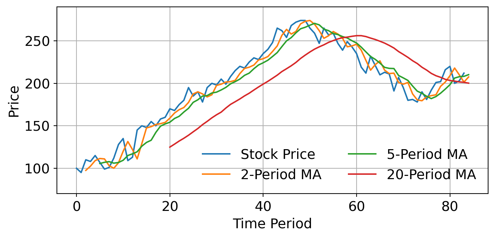
Figure 2. Stock Trading Using Moving Average
3.4.2 Example
Given the historical demand from Period 1 to 10, use 3-period moving average to forecast the demand in Period 4 to Period 11.
| Period | Demand (Y) | 3-period MA |
|---|---|---|
| 1 | 120 | |
| 2 | 135 | |
| 3 | 150 | |
| 4 | 140 | 135.00 |
| 5 | 170 | 141.67 |
| 6 | 175 | 153.33 |
| 7 | 165 | 161.67 |
| 8 | 185 | |
| 9 | 170 | |
| 10 | 200 | |
| 11 |
\[\hat{y}_4 = \frac{120 + 135 + 150}{3} = 135\]
\[\hat{y}_5 = \frac{135 + 150 + 140}{3} = 141.67\]
\[\hat{y}_6 = \frac{150 + 140 + 170}{3} = 153.33\]
\[\hat{y}_7 = \frac{140 + 170 + 175}{3} = 161.67\]
3.4.2 Example (cont.)
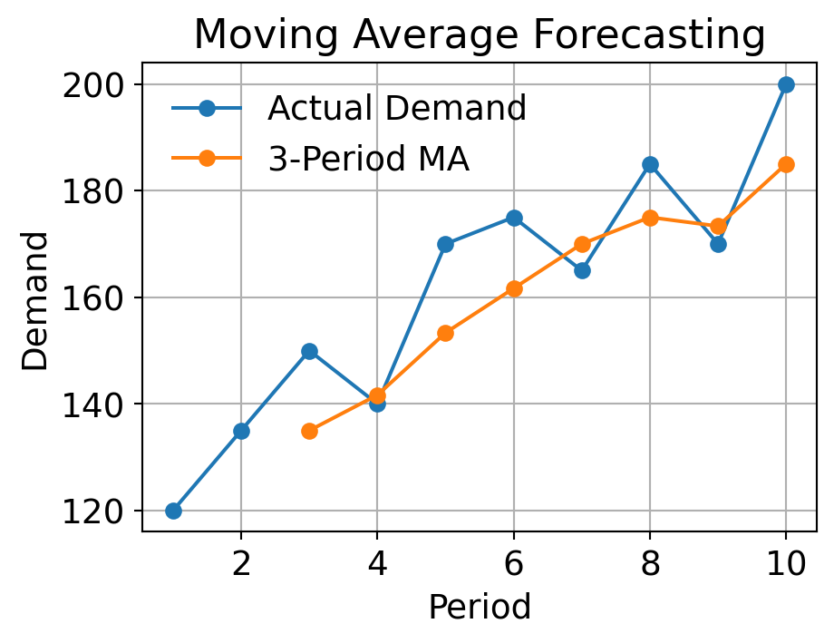
- MA smooths out spikes and noise in the data.
Best fit:
- Stable demand patterns
- Short-term forecasting
Limitations:
- Lagging indicator - always behind actual data
- Cannot detect trend or seasonality
- Weights are all equal - all recent data treated the same (average)
3.4.3 Exercise
A warehouse records the weekly demand (in units) for a specific component. Use moving averages with different periods to forecast demand and evaluate their effectiveness.
| Week | 1 | 2 | 3 | 4 | 5 | 6 | 7 | 8 | 9 |
|---|---|---|---|---|---|---|---|---|---|
| Demand | 200 | 220 | 210 | 240 | 230 | 250 | 270 | 260 | 240 |
Instructions:
- Compute forecasts using:
- 2-period moving average
- 3-period moving average
- 4-period moving average
- Start calculating forecasts only when you have enough prior data points.
- Compute the SSE for each model.
- Which moving average performed best?
- How does increasing \(n\) affect the responsiveness of the model?
- Which model would you choose if demand becomes more volatile?
3.4.3 Exercise (cont.)
1. Compute forecasts using 2-MA, 3-MA, and 4-MA
| Period | Y | 2-MA | 3-MA | 4-MA |
|---|---|---|---|---|
| 1 | 200 | |||
| 2 | 220 | |||
| 3 | 210 | |||
| 4 | 240 | |||
| 5 | 230 | |||
| 6 | 250 | |||
| 7 | 270 | 240 | ||
| 8 | 260 | 260 | 250.00 | |
| 9 | 240 | 265 | 260.00 | 252.50 |
| 10 | 250 | 256.67 | 255.00 |
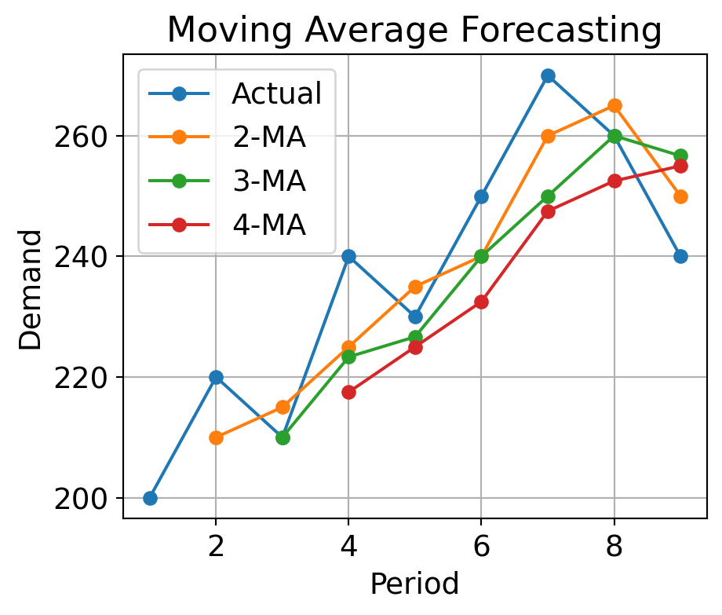
3.4.3 Exercise (cont.)
2-3. Compute the SSE for each model. Which period MA performed best?
| Period | Y | 2-MA | 3-MA | 4-MA |
|---|---|---|---|---|
| 1 | 200 | |||
| 2 | 220 | |||
| 3 | 210 | |||
| 4 | 240 | |||
| 5 | 230 | |||
| 6 | 250 | |||
| 7 | 270 | 240 | ||
| 8 | 260 | 260 | 250 | |
| 9 | 240 | 265 | 260 | 252.50 |
3.5 Weighted Moving Average Model
- A refinement of the simple moving average.
- Assigns more importance (weight) to recent observations.
- Better for data with slight trends, where recent periods are more relevant.
\[\hat{Y}_{t+1} = w_1Y_t + w_2Y_{t-1} + \cdots + w_nY_{t-n+1}\]
\[\sum w_i = 1\]
The choice of weights will affect the forecasting results.
- Manual tuning: Try weights like (0.5, 0.3, 0.2) or (0.6, 0.3, 0.1)
- Optimisation: Use historical error metrics to minimise forecast error
- Heuristic: Emphasise recency, but balance for smoothing
3.5.1 Example
A logistics manager tracks weekly outbound shipment volumes for a distribution center. To better anticipate outbound volume and optimize truck scheduling, you will forecast demand using both 3-period SMA and 3-period WMA with custom weights as follows:
- Most recent: 0.5
- Second recent: 0.3
- Third recent: 0.2
| Week | 1 | 2 | 3 | 4 | 5 | 6 | 7 | 8 | 9 |
|---|---|---|---|---|---|---|---|---|---|
| Demand | 400 | 420 | 410 | 450 | 460 | 470 | 440 | 480 | 500 |
3.5.1 Example (cont.)
| X | Y | 3 MA | Error (SMA) | 3 WMA | Error (WMA) |
|---|---|---|---|---|---|
| 1 | 400 | ||||
| 2 | 420 | ||||
| 3 | 410 | ||||
| 4 | 450 | 410.00 | 40.00 | 39 | |
| 5 | 460 | 426.67 | 33.33 | 28 | |
| 6 | 470 | 440.00 | 30.00 | 23 | |
| 7 | 440 | 460.00 | -20.00 | -23 | |
| 8 | 480 | 456.67 | 23.33 | 27 | |
| 9 | 500 | 463.33 | 36.67 | 34 | |
| 10 | 473.33 |
Which method performed better overall? Why?
3.5.1 Example (cont.)
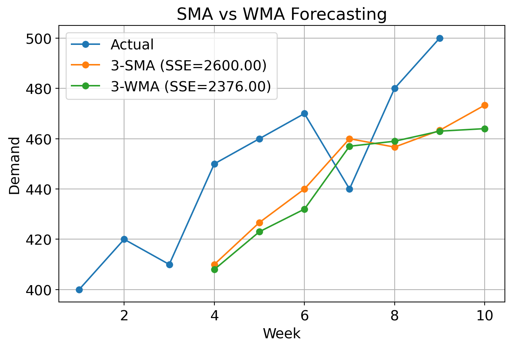
Which method performed better overall? Why?
3.6 Simple Exponential Smoothing (SES)
- SES generates forecasts by assigning exponentially decreasing weights to past observations.
- Unlike moving averages, SES automatically adjusts the weight of new data through a smoothing parameter \(\alpha\).
\[\hat{Y}_{t+1} = \alpha Y_t + (1 - \alpha)\hat{Y}_t\]
- \(\alpha\) = smoothing constant (\(0 < \alpha \leq 1\))
- \(Y_t\) = actual value at time \(t\)
- \(\hat{Y}_t\) = forecast for time \(t\)
Best Fit:
- Short-term demand with no clear trend or seasonality
- Daily/weekly demand planning for consumables
- Safety stock estimation in retail or healthcare
Limitations:
- Does not handle trends or seasonal cycles
- Requires good choice of \(\alpha\)
- Initial forecast selection can affect accuracy
- Forecasts are always lagging
3.6.1 Effect of Smoothing Constant \(\alpha\) in SES
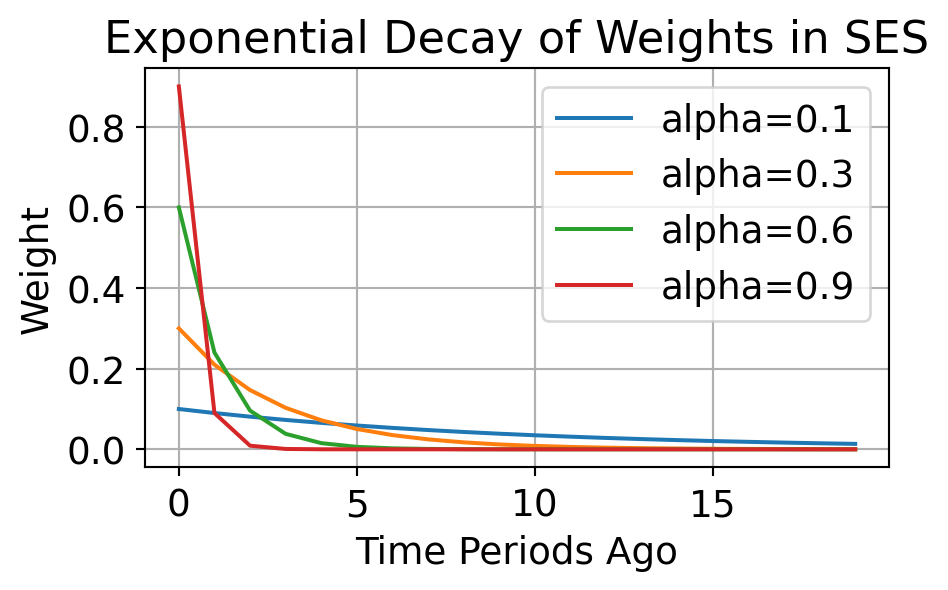
How different values of \(\alpha\) (smoothing constant) affect the weights assigned
- Higher \(\alpha\) values (e.g., 0.9) give much more weight to recent data.
- Lower \(\alpha\) values (e.g., 0.1) spread weights more evenly, leading to slower reaction to changes.
| \(\alpha\) Value | Behaviour | Use Case |
|---|---|---|
| 0.1 - 0.3 | Slow, more smoothing | Stable demand |
| 0.4 - 0.7 | Balanced response | Mild variability |
| 0.8 - 1.0 | Fast, less smoothing | Erratic or fast-changing demand |
Use MAE or RMSE to pick optimal \(\alpha\) using trial/error or optimisation.
3.6.2 Example
A supply chain manager wants to forecast weekly demand using Simple Exponential Smoothing (SES).
- Smoothing constant: \(\alpha = 0.3\)
- Initial forecast: \(\hat{Y}_1 = 200\)
\[\hat{Y}_{t+1} = \alpha Y_t + (1 - \alpha)\hat{Y}_t\]
| Period | Actual Demand | Forecast | Calculation |
|---|---|---|---|
| 1 | 200 | 200 (given) | Initial forecast |
| 2 | 220 | 200 | \(0.3 \times 200 + 0.7 \times 200\) |
| 3 | 210 | 206 | \(0.3 \times 220 + 0.7 \times 200\) |
| 4 | 230 | 207.20 | \(0.3 \times 210 + 0.7 \times 206\) |
| 5 | 225 | 214.04 | \(0.3 \times 230 + 0.7 \times 207.2\) |
| 6 | 240 | 217.33 | \(0.3 \times 225 + 0.7 \times 214.04\) |
| 7 | 224.13 | \(0.3 \times 240 + 0.7 \times 217.33\) |
3.6.2 Example (cont.)
Conduct sensitivity analysis by varying \(\alpha\) and observing how the forecasts change. Try \(\alpha = [0.3, 0.5, 0.7, 0.9]\) and compare the results.
Code
import numpy as np
actual = np.array([200, 220, 210, 230, 225, 240])
alpha = [0.3, 0.5, 0.7, 0.9]
forecasts = {}
for a in alpha:
forecast = np.empty_like(actual, dtype=float)
forecast[0] = 200 # initial forecast
for t in range(1, len(actual)):
forecast[t] = a * actual[t-1] + (1 - a) * forecast[t-1]
forecasts[a] = forecast
## sse for each alpha
sse = {a: np.sum((actual - forecasts[a]) ** 2) for a in alpha}
plt.figure(figsize=(8, 4.5))
plt.plot(np.arange(1, len(actual)+1), actual, marker='o', label='Actual')
for a in alpha:
plt.plot(np.arange(1, len(actual)+1), forecasts[a], marker='o', label=f'{a} (SSE={sse[a]:.2f})')
plt.xlabel('Period')
plt.ylabel('Demand')
plt.title('SES Forecasting with Different Alpha Values')
plt.legend(frameon=False)
plt.grid()
plt.show()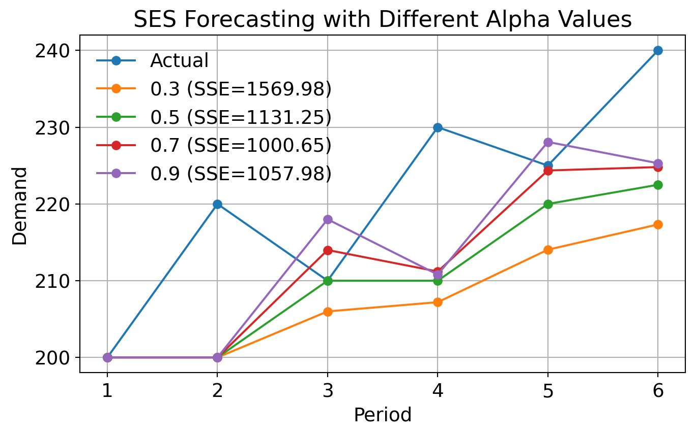
3.6.2 Example (cont.)
Calculate the SSE for the forecasts and discuss how well SES using the best \(\alpha\) performed compared to a simple moving average with a 3-period window and regression analysis.
Code
import numpy as np
actual = np.array([200, 220, 210, 230, 225, 240])
alpha = 0.7
## SES Forecasting
forecast = np.empty_like(actual, dtype=float)
forecast[0] = 200 # initial forecast
for t in range(1, len(actual)):
forecast[t] = alpha * actual[t-1] + (1 - alpha) * forecast[t-1]
sse_ses = np.sum((actual - forecast) ** 2)
## 3-period MA Forecasting
ma_forecast = np.convolve(actual, np.ones(3)/3, mode='valid')
sse_ma = np.sum((actual[2:] - ma_forecast) ** 2)
## regression curve fitting
x = np.arange(1, len(actual) + 1)
b = np.cov(x, actual, ddof=0)[0, 1] / np.var(x)
a = np.mean(actual) - b * np.mean(x)
reg_forecast = a + b * x
sse_reg = np.sum((actual - reg_forecast) ** 2)
# plotting
plt.figure(figsize=(8, 4.5))
plt.plot(np.arange(1, len(actual)+1), actual, marker='o', label='Actual')
plt.plot(np.arange(1, len(actual)+1), forecast, marker='o', label=r'SES (SSE={:.2f})'.format(sse_ses))
plt.plot(np.arange(3, len(actual)+1), ma_forecast, marker='o', label=r'3-MA (SSE={:.2f})'.format(sse_ma))
plt.plot(x, reg_forecast, marker='o', label=r'Regression (SSE={:.2f})'.format(sse_reg))
plt.xlabel('Period')
plt.ylabel('Demand')
plt.legend(frameon=False)
plt.grid()
plt.show()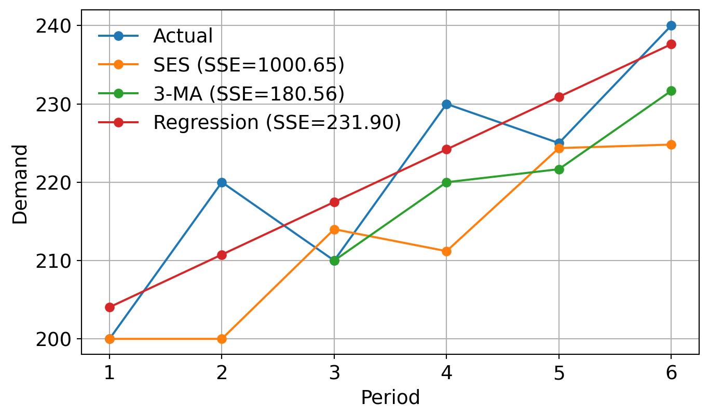
3.7 Multiple Regression Analysis
An extension of simple linear regression that models the relationship between a dependent variable and multiple independent variables.
Useful for forecasting when demand is influenced by several factors (e.g., price, advertising spend, seasonality).
The model takes the form: \[Y = a + b_1 X_1 + b_2 X_2 + \cdots + b_k X_k,\] where
- \(Y\) is the dependent variable,
- \(X_i\) are the independent variables,
- \(a\) is the intercept, and
- \(b_i\) are the coefficients representing the impact of each independent variable on \(Y\).
3.7.1 Example
| Month | Ad Spend ($000) \(X_1\) | Fuel Price ($/L) \(X_2\) | Deliveries \(Y\) |
|---|---|---|---|
| Jan | 5 | 1.2 | 1200 |
| Feb | 7 | 1.3 | 1300 |
| Mar | 6 | 1.1 | 1250 |
| Apr | 8 | 1.2 | 1350 |
| May | 9 | 1.5 | 1400 |
Goal: Predict delivery volume based on advertising spend and fuel price.
Step 1: Define the Model
\[ Y = a + b_1 X_1 + b_2 X_2 \]
To fit the model manually, we calculate
- \(\sum X_1\), \(\sum X_2\), \(\sum Y\), \(\sum X_1^2\), \(\sum X_2^2\), \(\sum X_1X_2\), \(\sum X_1Y\), and \(\sum X_2Y\).
Step 2: Build the Working Table
| Month | \(X_1\) | \(X_2\) | \(Y\) | \(X_1^2\) | \(X_2^2\) | \(X_1X_2\) | \(X_1Y\) | \(X_2Y\) |
|---|---|---|---|---|---|---|---|---|
| Jan | 5 | 1.2 | 1200 | 25 | 1.44 | 6.0 | 6000 | 1440 |
| Feb | 7 | 1.3 | 1300 | 49 | 1.69 | 9.1 | 9100 | 1690 |
| Mar | 6 | 1.1 | 1250 | 36 | 1.21 | 6.6 | 7500 | 1375 |
| Apr | 8 | 1.2 | 1350 | 64 | 1.44 | 9.6 | 10800 | 1620 |
| May | 9 | 1.5 | 1400 | 81 | 2.25 | 13.5 | 12600 | 2100 |
| Sum | 35 | 6.3 | 6500 | 255 | 8.03 | 44.8 | 46000 | 8225 |
Step 3: Normal Equations
\[ \begin{align} \sum Y =&\;\; na + b_1 \sum X_1 + b_2 \sum X_2 \\ \\ \sum X_1Y =&\;\; a \sum X_1 + b_1 \sum X_1^2 + b_2 \sum X_1X_2\\ \\ \sum X_2Y =&\;\; a \sum X_2 + b_1 \sum X_1X_2 + b_2 \sum X_2^2 \end{align} \]
Step 4: Substitute the Values
\[ \begin{align} 6500 =&\;\; 5a + 35b_1 + 6.3b_2 \\ \\ 46000 =&\;\; 35a + 255b_1 + 44.8b_2\\ \\ 8225 =&\;\; 6.3a + 44.8b_1 + 8.03b_2 \end{align} \]
Step 5: Solve the System of Equations
\[ a \approx 950; \qquad b_1 \approx 50; \qquad b_2 \approx 0 \]
So the estimated regression equation is
\[ \hat{Y} = 950 + 50X_1 + 0X_2 \]
Interpretation:
- For each additional unit of Ad Spend, deliveries increase by about 50.
- In this small dataset, Fuel Price has almost no effect.
Example Prediction
Suppose that \(X_1 = 10\) and \(X_2 = 1.4\).
Then predicted delivery volume is
\[ \hat{Y} = 950 + 50(10) + 0(1.4) = 950 + 500 = \boxed{1450} \]
4. Evaluation Metrics
Other than the sum of squared errors (SSEs), there are several metrics to evaluate the accuracy of forecasting models. Common ones include:
| Metric | Formula | Interpretation |
|---|---|---|
| Sum of Absolute Errors (SAE) | \(\sum |y_i - \hat{y}_i|\) | Total absolute error between actual and forecasted values. Lower is better. |
| Mean Absolute Error (MAE) | \(\dfrac{1}{n} \sum |y_i - \hat{y}_i|\) | Average absolute error between actual and forecasted values. Lower is better. |
| Root Mean Squared Error (RMSE) | \(\sqrt{\dfrac{1}{n} \sum (y_i - \hat{y}_i)^2}\) | Square root of average squared error. More sensitive to large errors. Lower is better. |
| Mean Absolute Percentage Error (MAPE) | \(\dfrac{100\%}{n} \sum \left| \dfrac{y_i - \hat{y}_i}{y_i} \right|\) | Average absolute percentage error. Useful for comparing across different scales. Lower is better. |
| R-squared (\(R^2\)) | \(1 - \dfrac{\sum (y_i - \hat{y}_i)^2}{\sum (y_i - \bar{y})^2}\) | Proportion of variance in the dependent variable explained by the model. Higher is better (max 1). |
5. Comparative Insights
| Method | Reactivity | Suitable For |
|---|---|---|
| Delphi Method | Low | Expert consensus, long-term |
| Naïve Forecasting | Very Low | Stable demand, short-term |
| Linear Regression | Medium | Trend analysis, long-term |
| Multiple Regression | Medium | Multiple factors, long-term |
| Simple Moving Average | Low | Stable, low noise |
| Weighted Moving Average | Medium | Mild trend, prioritise recency |
| Exponential Smoothing | Variable | Short-term, adaptive |
Key Takeaways
- No one-size-fits-all: Choose based on data patterns and forecasting horizon.
- Simpler models can outperform complex ones if assumptions are met.
- Always evaluate forecast accuracy using multiple metrics.